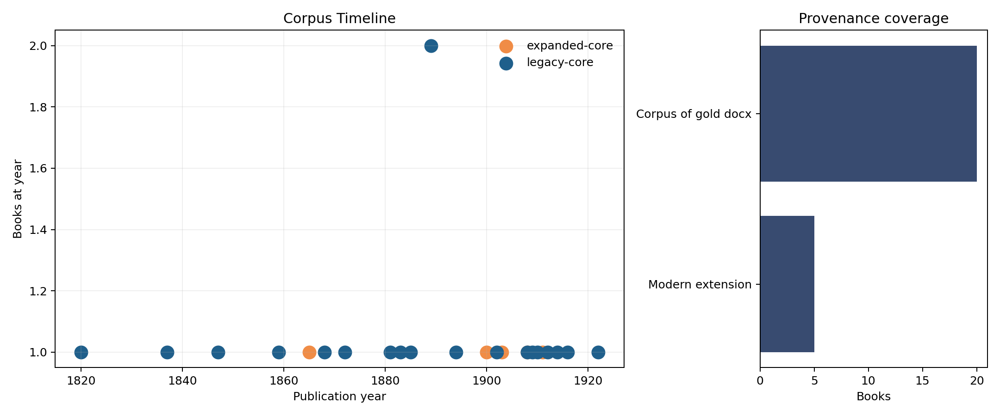
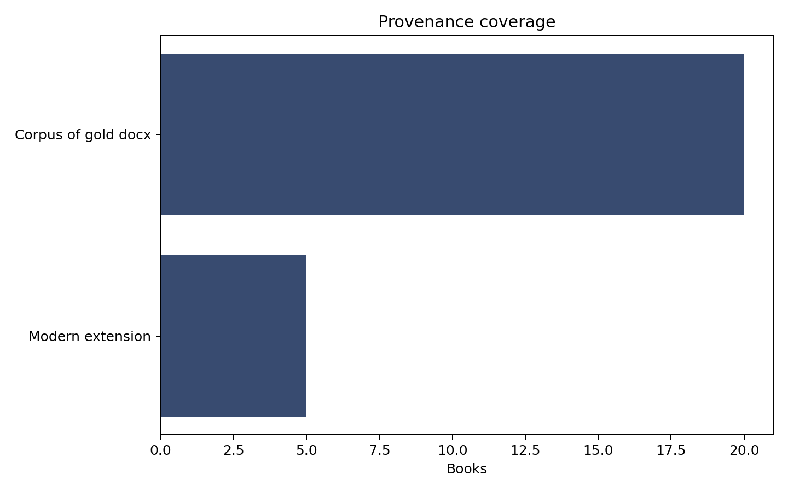
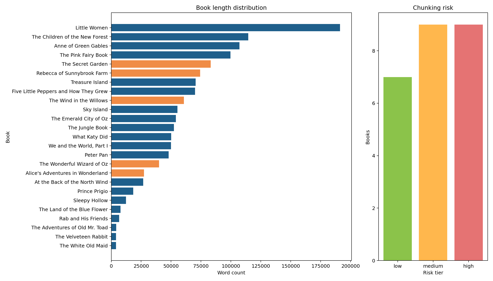
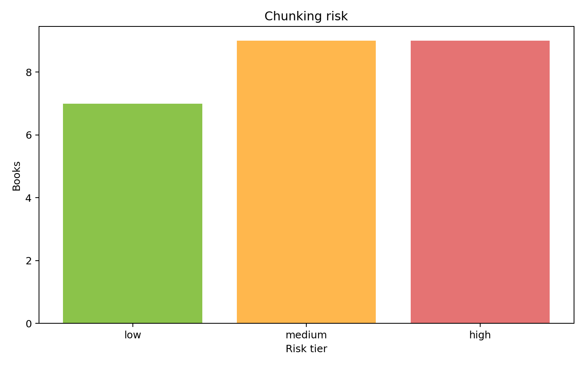
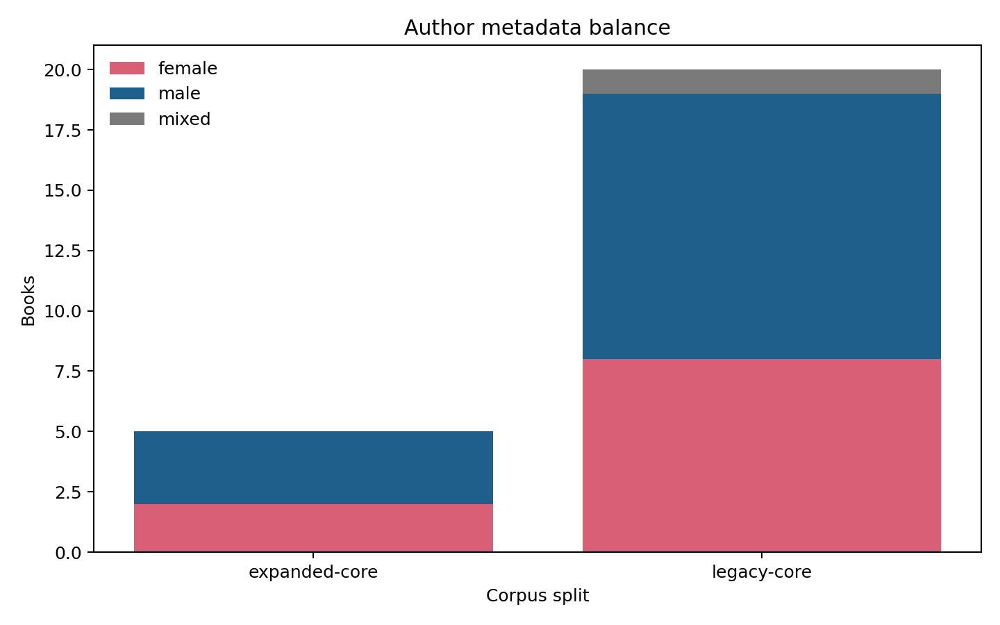
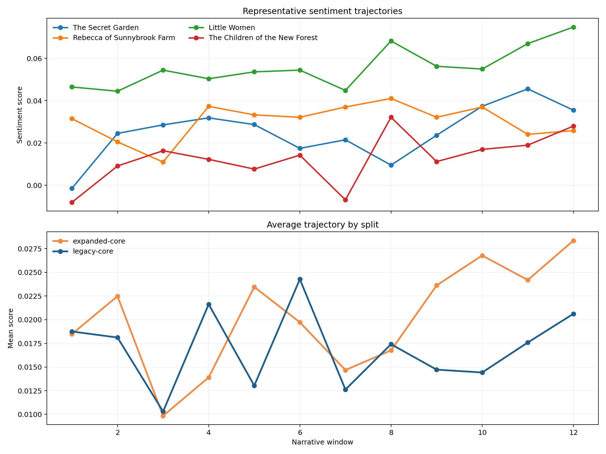
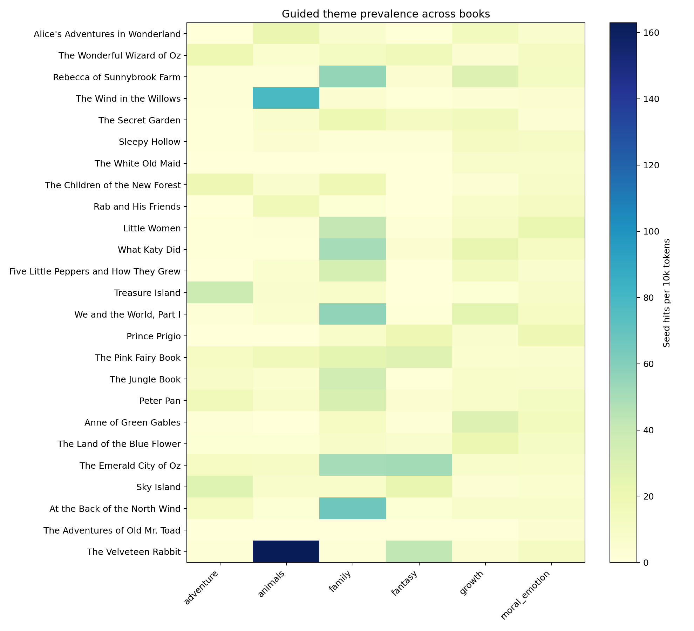
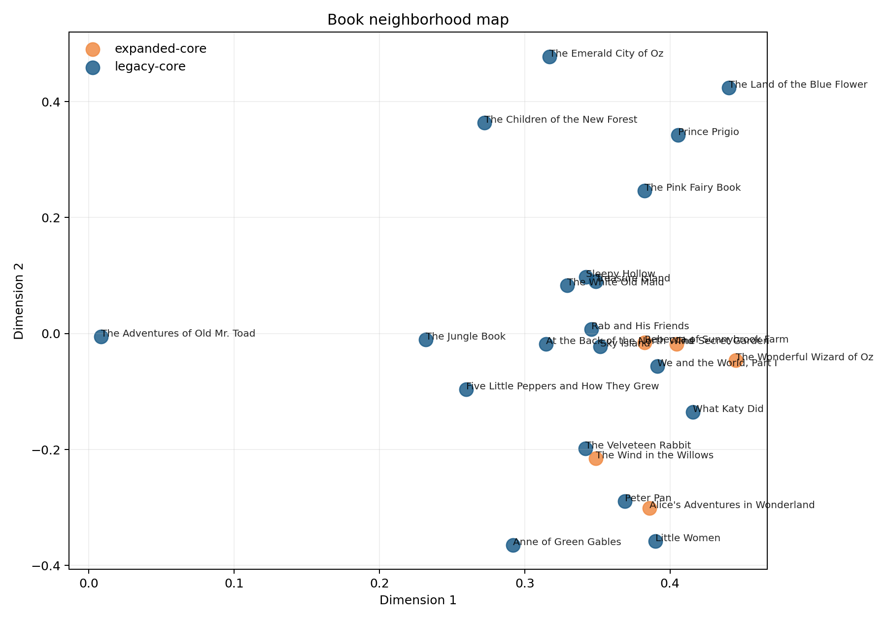
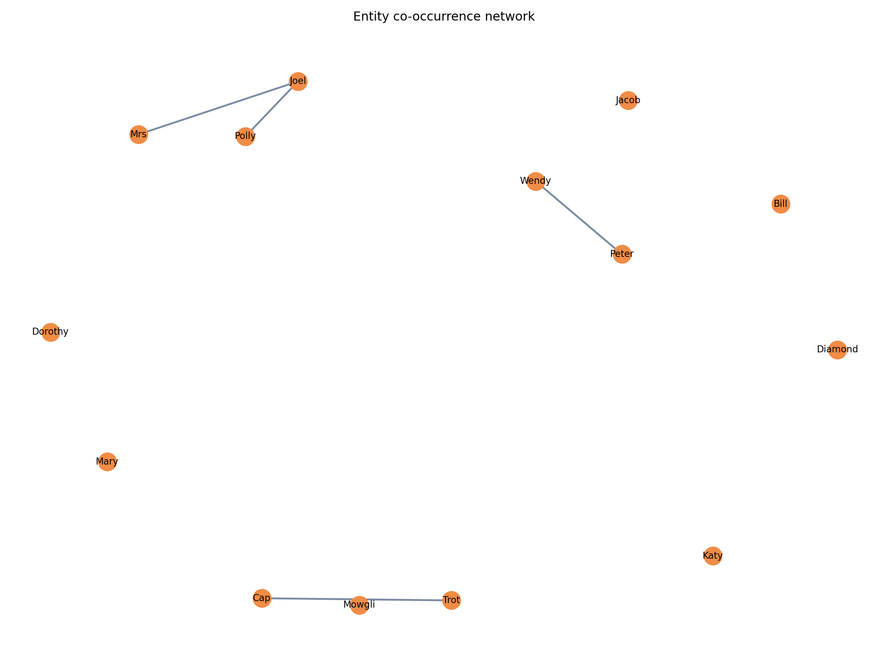
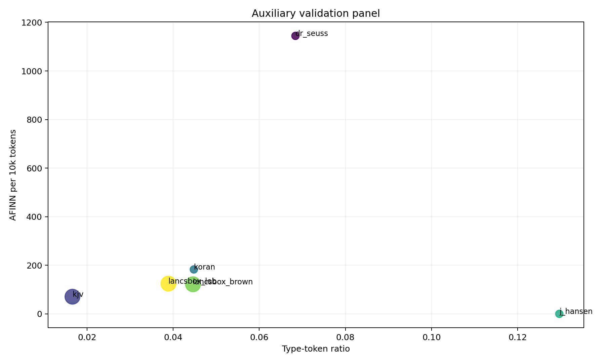

Fallback HTML report generated without Quarto. The repo still keeps docs/report.qmd as the canonical report source.
This report covers 25 books and 1,332,482 words across the rebuilt corpus.
| split | n_books | total_words | median_book_words | mean_book_words | mean_afinn_per_10k | mean_type_token_ratio |
|---|---|---|---|---|---|---|
| expanded-core | 5 | 285618 | 60770.0 | 57123.6 | 201.88 | 0.0874 |
| legacy-core | 20 | 1046864 | 50005.0 | 52343.2 | 169.58 | 0.1353 |
| cohort | min | q1 | median | mean | q3 | max | perplexity |
|---|---|---|---|---|---|---|---|
| men | -245.0 | -41.0 | -3.0 | -13.76 | 23.0 | 195.0 | 3369.274 |
| women | -232.0 | -21.0 | 9.0 | 13.88 | 54.0 | 190.0 | 4628.327 |
| component | repo_metric | legacy_2016_baseline | external_reference | published_reference_or_sota | comparability_note |
|---|---|---|---|---|---|
| Sentiment | afinn-fallback; mean window score 0.02 | AFINN cohort means: men -13.76 / women 13.88 | distilbert-base-uncased-finetuned-sst-2-english | Official model card only | No directly comparable literary benchmark in the local archive. |
| Topic modeling | Guided themes + sklearn LDA; mean dominant topic share 0.844 | topicmodels::LDA perplexity men 3,369.3 / women 4,628.3 | bertopic | Method docs only | Cross-corpus SOTA numbers are not directly comparable to this literary corpus. |
| NER | heuristic-titlecase; top-10 entity mean density 41.60 per 10k | Incomplete openNLP sketch | gliner | Upstream docs | Local entity density and co-occurrence are project-specific. |
| Embeddings / retrieval | tfidf-fallback; mean top-1 neighbor cosine 0.151 | not available | Qwen/Qwen3-Embedding-0.6B | Model card / MTEB-style references | Neighbor quality is corpus-specific; external numbers are only reference context. |
| source | word_count | type_token_ratio | sentence_count | afinn_per_10k |
|---|---|---|---|---|
| dr_seuss | 804 | 0.0684 | 127 | 1144.28 |
| kjv | 793119 | 0.0166 | 30031 | 70.58 |
| koran | 161130 | 0.0448 | 7376 | 182.77 |
| j_hansen | 185 | 0.1297 | 7 | 0.00 |
| lancsbox_brown | 861989 | 0.0446 | 50629 | 121.66 |
| lancsbox_lob | 1018723 | 0.0389 | 59133 | 124.39 |









